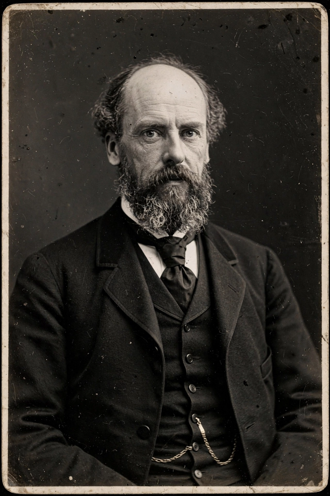

Karl Pearson

Karl Pearson FRS (born Carl Pearson; 27 March 1857 – 27 April 1936) was an English mathematician and biostatistician. He has been credited with establishing the discipline of mathematical statistics. He founded the world's first university statistics department at University College London in 1911, and contributed significantly to the field of biometrics and meteorology. Pearson was also a proponent of eugenics, a controversial aspect of his legacy, and a protégé and biographer of Sir Francis Galton.
Early life and education
Pearson was born in Islington, London, into a Quaker family. He was educated privately at University College School and then studied mathematics at King's College, Cambridge, graduating as Third Wrangler in 1879. He subsequently studied law, German literature, and philosophy, translating works and writing on a wide range of subjects before turning to applied mathematics.
Contributions to statistics
Pearson's work was all-embracing in the application and development of mathematical statistics. He introduced the Pearson correlation coefficient, still a standard measure of linear association; the chi-squared test (1900); the concept of the p-value's precursors; and an early form of principal component analysis (1901). He developed the Pearson system of continuous probability distributions, founded the journal Biometrika in 1901 with W. F. R. Weldon and Galton, and coined the terms "standard deviation" and "histogram."
Biometrics and eugenics
With funding from Galton, Pearson established the Biometric Laboratory at University College London and later the Galton Laboratory for National Eugenics, which he directed from 1911. His advocacy of eugenics, and his view that statistics should serve the measurement of heredity, drew him into famous disputes with contemporaries such as William Bateson and Ronald Fisher, whose methods eventually largely supplanted his. Modern reassessments regard his statistical contributions as foundational while treating his eugenic commitments critically.
Philosophy of science
In The Grammar of Science (1892), a work that influenced the young Albert Einstein, Pearson argued that science describes rather than explains, and that concepts such as force and causality are constructs of the mind imposed on sense impressions.